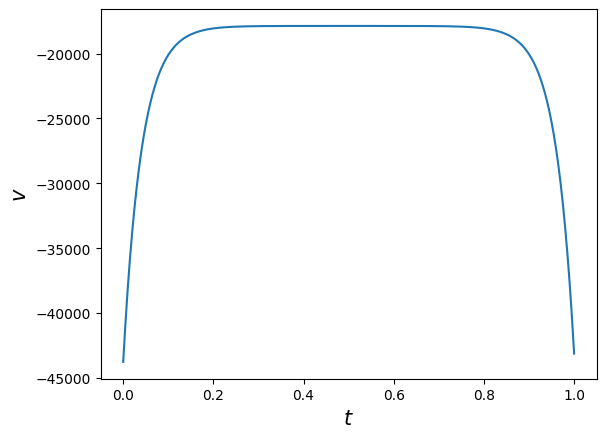

import numpy as np
import matplotlib.pyplot as pltTopics in Quantitative Finance, Summer 2025
Lecture 6: Optimal execution under price impact
\[ \newcommand{\bea}{\begin{eqnarray}} \newcommand{\eea}{\end{eqnarray}} \newcommand{\supp}{\mathrm{supp}} \newcommand{\F}{\mathcal{F} } \newcommand{\cF}{\mathcal{F} } \newcommand{\cG}{\mathcal{G} } \newcommand{\E}{\mathbb{E} } \newcommand{\Eof}[1]{\mathbb{E}\left[ #1 \right]} \newcommand{\Etof}[1]{\mathbb{E}_t\left[ #1 \right]} \def\Cov{{ \text{Cov} }} \def\Var{{ \text{Var} }} \newcommand{\1}{\mathbf{1} } \newcommand{\p}{\partial} \newcommand{\PP}{\mathbb{P} } \newcommand{\Pof}[1]{\mathbb{P}\left[ #1 \right]} \newcommand{\QQ}{\mathbb{Q} } \renewcommand{\R}{\mathbb{R} } \newcommand{\DD}{\mathbb{D} } \newcommand{\HH}{\mathbb{H} } \newcommand{\spn}{\mathrm{span} } \newcommand{\cov}{\mathrm{cov} } \newcommand{\HS}{\mathcal{L}_{\mathrm{HS}} } \newcommand{\Hess}{\mathrm{Hess} } \newcommand{\trace}{\mathrm{trace} } \newcommand{\LL}{\mathcal{L} } \newcommand{\s}{\mathcal{S} } \newcommand{\ee}{\mathcal{E} } \newcommand{\ff}{\mathcal{F} } \newcommand{\hh}{\mathcal{H} } \newcommand{\bb}{\mathcal{B} } \newcommand{\dd}{\mathcal{D} } \newcommand{\g}{\mathcal{G} } \newcommand{\half}{\frac{1}{2} } \newcommand{\T}{\mathcal{T} } \newcommand{\bit}{\begin{itemize}} \newcommand{\eit}{\end{itemize}} \newcommand{\beq}{\begin{equation}} \newcommand{\eeq}{\end{equation}} \newcommand{\tr}{\text{tr}} \renewcommand{\underbar}{\underline} \newcommand{\mbA}{\mathbf A} \newcommand{\mbB}{\mathbf B} \newcommand{\mbP}{\mathbf P} \newcommand{\mbQ}{\mathbf Q} \newcommand{\mbR}{\mathbf R} \newcommand{\mbS}{\mathbf S} \newcommand{\bA}{\boldsymbol A} \newcommand{\bB}{\boldsymbol B} \newcommand{\bu}{\boldsymbol u} \newcommand{\bq}{\boldsymbol q} \newcommand{\bW}{\boldsymbol W} \newcommand{\bX}{\boldsymbol X} \newcommand{\bx}{\boldsymbol x} \newcommand{\bSigma}{\boldsymbol \Sigma} \newcommand{\tS}{\tilde S} \newcommand{\inn}[2]{\left\langle #1, #2 \right\rangle} \]
Agenda
- Market impact of meta orders
- Impact profile
- Empirical market impact profiles
- Optimal execution as variational and control problems
- risk neutral
- mean-qv optimization
- The Almgren-Chriss model and the Almgren-Chriss optimal liquidation strategy (Almgren and Chriss 2001)
- The Obizhaeva-Wang model (Obizhaeva and Wang 2013)
- Combining Almgren-Chriss and Obizhaeva-Wang: the ACOW model
- Numerical examples
What is market or price impact?
Empirically, in average a buy order pushes the price up whereas a sell order sends the price down. This empirically observed market phenomenon is referred to as price impact of transaction or trading.
A price impact model is a model aiming at quantify the relationship between the transacted volume and price.
The square-root formula for market impact
For many years, traders have used the simple sigma-root-liquidity model described for example by Grinold and Kahn in 1994.
Software incorporating this model includes:
- Salomon Brothers, StockFacts Pro since around 1991
- Barra, Market Impact Model since around 1998
- Bloomberg, TCA function since 2005
The model is always of the rough form
\[\Delta P = \text{Spread cost} +\alpha\,\sigma\,\sqrt{\frac Q V}\] where \(\sigma\) is daily dollar volatility, \(V\) is daily volume, \(Q\) is the number of shares to be traded and \(\alpha\) is a constant pre-factor of order one.
注: Spread. 在金融市场中, 资产通常有两个报价:
- Bid price (买入价): 交易者愿意支付的价格
- Ask price (卖出价): 交易者愿意接受的价格
这两者之间的差额就是 Spread (点差).
注: Spread cost. 无论你买入还是卖出, 你都会吃掉一半的 spread. \[ \text{Spread cost} = \frac{1}{2} \times \text{Spread} \]
Commonly applied algorithms
- VWAP “Volume weighted average price”
- Trades at constant rate in volume time
- POV “Percentage of volume”
- Participate at a certain percentage of market volume
- TWAP “Time weighted average price”
- Trades at constant rate in wall clock time
- IS “Implementation shortfall”
- Trades faster at the beginning and more slowly at the end
- To balance the risk of a worse price against the benefit of better execution from being patient.
Terminology
- Metaorder means that a sufficiently large order that cannot be filled immediately without eating into the order book.
- Such orders need to be split.
- Each component of a metaorder is referred to as a child order.
- The impact profile refers to the average path of the stock price during and after execution of a metaorder.
- Completion refers to the timestamp of the last executed child order.
Schematic of impact profile

The impact profile
Stylized features of impact profile
When a buy metaorder of length \(T\) is sent, its immediate effect is to move the price upwards (to \(S_T\) say).
After completion, the price reverts to some price \(S_{\infty}\) (which may be the starting price \(S_0\)).
Market impact thus has two components: one transient and one permanent.
Knowledge of the metaorder impact profile is key to the derivation of optimal execution strategies.
Empirical market impact profiles from (Bacry et al. 2014)

Empirical market impact profiles from (Zarinelli et al. 2014)

Notations
The following notations will be used throughout.
- \(S_t\): mid or efficient price
- \(\tilde S_t\): transaction price. Thus, \(\tilde S_t = S_t + \text{spread}\).
- \(\sigma\): volatility of stock.
- \(Z_t\): Brownian motions
- \(v_t\): trading rate at time \(t\)
- \(X_t\): remaining orders to be executed at time \(t\)
Almgren and Chriss
Almgren and Chriss treats the execution of a meta order as a tradeoff between risk and execution cost.
According to their formulation:
- The faster an order is executed, the higher the execution cost
- The faster an order is executed, the lower the risk (which is increasing in position size).
Note that this is inconsistent with the empirical success of the square-root formula in describing the cost of meta orders.
The price impact model of Almgren and Chriss
For simplicity, we consider liquidation of an existing position \(X\). Denote the position at time \(t\) by \(x_t\) with \(x_0=X\) and \(x_T=0\).
Almgren and Chriss model market impact and slippage as follows.
\[ \tilde{S}_t = S_t + \eta v_t = s_0 + \sigma_S Z_t + \gamma(X_t - x_0) + \eta v_t, \]
where \(\displaystyle X_t = x_0 + \int_0^t v_s \mathrm{d}s\).
\[\begin{align*} \Eof{\tilde{S}_t - s_0} &= \sigma_S \Eof{Z_t} + \gamma \Eof{X_t - x_0} + \eta \Eof{v_t} \\ &= \gamma \int_0^t v_s \mathrm{d}s + \eta v_t. \end{align*}\]
Note
- \(\eta v_t\): temporary impact
- \(\gamma (X_t - x_0)\): permanenty impact
- \(X_t = x_0 + v t\) if \(v_t \equiv v\), a constant.
Suppose \(\displaystyle v_t = - \frac{x}{T}\), then: \[ \Eof{\tilde{S}_t - s_0} = \gamma x \left( 1 - \frac{t}{T} \right) + \eta \frac{x}{T}. \]
Impact profile in the Almgren and Chriss model
T = 1
vwap_AC = lambda t: t/T*(t <= T) + T*(t > T)
t = np.linspace(0, 2, 200)
#plt.figure(figsize=(8, 6))
plt.plot(t, vwap_AC(t), color='orange', label='Almgren-Chriss')
plt.vlines(x=1, ymin=0, ymax=2, linewidth=0.5, ls='dotted')
plt.ylim([0, 1.5])
plt.xlabel(r'$t$', fontsize=15)
plt.ylabel(r'$\mathbb{E}|S_t - S_0|$', fontsize=15)
plt.title('Almgren-Chriss price path', fontsize=18);Inconsistency with empirical observation
- This price path is inconsistent with empirical observation:
- The average price path during execution is linear.
- There is no price reversion after completion of the order.
P&L and cost of trading of a trading strategy
Let \(x_t\) be a trading strategy. The corresponding P&L (up to time \(t\)), denoted by \(\Pi_t(x)\), is identified as
\[ \Pi_t(x) := x_t (S_t - S_0) + \int_0^t (S_0 - \tilde S_\tau) \mathrm{d} x_\tau. \]
The first term represents the (fair) value of stock shares that are yet to be transacted.
The second term corresponds to the monetary value collected from the shares that have been transacted up to time \(t\).
Obviously, should there be no trade in the time interval \([0,t]\), i.e., \(x_s = X\) for all \(s \in [0,t]\), the P&L reads \(\Pi_t(x) = X (S_t - S_0)\); reflecting the P&L from the price movement of the stock.
Implementation shortfall as cost of trading
Negative P&L is also referred to as the implementation shortfall, which will be used as the cost of trading, denoted by \(C\) hereafter.
P&L in Almgren-Chriss model
Note that, at the end of execution period \(T\), the P&L reads \[ \Pi_T(x) = x_T (S_T - S_0) + \int_0^T (S_0 - \tilde S_u) \mathrm{d} x_u, \] should there be \(x_T\) shares yet to be transacted. Hence, in Almgren-Chriss model
\[\begin{align*} \Pi_T(x) &= x_T (S_T - S_0) + \int_0^T (S_0 - \tilde S_u) \mathrm{d} x_u \\ &= \int_0^T [- \gamma (x_u - X) - \sigma Z_u - \eta v_u] \mathrm{d} x_u \quad (\text{note that } x_T = 0) \\ &= -\frac\gamma2 X^2 + \sigma \int_0^T x_u \mathrm{d} Z_u - \eta \int_0^T v_u^2 \mathrm{d} u \quad (\text{Integration by parts}). \end{align*}\]
Therefore, the expected cost corresponding to the trading strategy \(x\) is given by
\[\begin{align*} & \E\left[C_T(x)\right] = \E\left[-\Pi_T(x)\right] = \frac\gamma2 X^2 + \eta \int_0^T \Eof{v_u^2} \mathrm{d} u. \end{align*}\]
Expected cost of TWAP in the Almgren and Chriss model
For a TWAP, \(v_t = -\frac XT\) where \(X\) is the total trade size and \(T\) is the duration of the order.
\[\begin{align*} \E[C_T(x)] &= \frac\gamma2 X^2 + \eta \int_0^T \left(\frac XT\right)^2 \mathrm{d} u \\ &= \frac\gamma2 X^2 + \eta \frac{X^2}T \\ &= \left(\frac\gamma2 + \frac\eta{T}\right)X^2. \end{align*}\]
The cost per share \(\hat C\) of executing an order using TWAP is therefore
\[\hat{C}=\left(\frac\gamma2 + \frac\eta{T}\right)X\]
which is linear in the trade size \(X\) and inversely proportional to the duration of the order.
Optimal strategy of a risk neutral trader
For a risk neutral trader whose objective is to minimize the cost of trading, the optimal control problem reads
\[\begin{align*} & \min_{v} \E\left[C_T(x)\right] \\ &= \min_{v} \left\{\frac\gamma2 X^2 + \eta \int_0^T \Eof{v_u^2} \mathrm{d} u \right\} \\ &= \frac\gamma2 X^2 + \eta \min_v \int_0^T \Eof{v_u^2} \mathrm{d} u, \end{align*}\]
where the state variable \(x_t\) is driven by \(\mathrm{d} x_t = v_t \mathrm{d} t\) with the constraints \(x_0 = X\) and \(x_T = 0\).
Note that, since \(S_t\) is not involved in the last expression, we end up with a deterministic control problem which can be solved by the solution to its associated HJB equation or, due to the simplicity of the dynamics of \(x_t\), further reduced to a variational problem.
注: risk-neutral trader 表示: Risk neutral investors may understand that risk is involved, but they aren’t considering it for the moment.
Quotes from Investopedia:
Risk neutral is a term used to describe the attitude of an individual who may be evaluating investment alternatives. If the individual focuses solely on potential gains regardless of the risk, they are said to be risk neutral. Such behavior, to evaluate reward without thought to risk, may seem to be inherently risky. A risk averse investor would not consider the choice to risk a $1000 loss with the possibility of making a $50 gain to be the same as risking only $100 to make the same $50 gain. However someone who is risk neutral would. Given two investment opportunities the risk-neutral investor only looks at the potential gains of each investment and ignores the potential downside risk.
Variational problem
\[\min_x \int_0^T\,\dot x_t^2\,\mathrm{d}t\]
with \(v_t=\dot x_t\) and \(x_0 = X\), \(x_T = 0\).
The Euler-Lagrange equation is then
\[\partial_t v_t=\partial_t^2 x_t=0\]
with boundary conditions \(x_0=X\) and \(x_T=0\) and the solution is obviously
\[v_t = -\frac{X}{T}; \, x_t=X\,\left(1-\frac{t}{T}\right)\]
注: 想象成一个最小化能量的问题, 那么就是沿着直线走.
注: Euler-Lagrange 方程是变分问题中的一个方程, 它是泛函达到极值 (严格地说, 是临界值) 的一个必要条件, 其地位类似于多元函数中梯度为零在极值分析中的地位.
假设求解泛函的函数空间为: \[ M = \{u \in C^1([t_0,t_1] \to U \subset \R^N): u(t_0) = P_0 \in U, u(t_1) = P_1 \in U\}, \] (其实, \(U\) 就是 \(u\) 的值域). 定义一个连续可微的函数:
\[\begin{align*} L: [t_0,t_1] \times U \times \R^N &\to \R, \\ (t,u,p) &\mapsto L(t,u,p). \end{align*}\]
这里的 \(p\) 一般代表 \(u\) 的导数, 即 \(p = \dot u\). 那么, 泛函的形式为:
\[ I(u) = \int_{t_0}^{t_1} L(t,u(t),\dot u(t)) \mathrm{d} t. \]
那么该泛函的极值 \(u^*\) 满足如下 Euler-Lagrange 方程:
\[ \int_{t_0}^t L_{u^i} (s, u(s), \dot u(s)) \mathrm{d} s + L_{p^i} (t, u(t), \dot u(t)) = C_i, \quad i=1,\ldots,N, \]
注: 如果 \(L,u\) 是 \(C^2\) 的, 那么上述积分形式的关系式可以求导: \[ - \frac{\mathrm{d}}{\mathrm{d} t} L_{p^i} (t, u(t), \dot u(t)) + L_{u^i} (t, u(t), \dot u(t)) = 0, \quad i=1,\ldots,N. \]
注: 我们现在假设 \(N=1\), 且此时 Euler-Lagrange 方程不含有 \(u\), 此时有下面的形式:
\[ \frac{\mathrm{d}}{\mathrm{d} t} L_{p} (t, \dot u(t)) = 0. \]
注: 如果不含有 \(p\) 的话, 那么 Euler-Lagrange 方程的形式为: \[ L_{u} (t, u(t)) = 0. \] 这是一个常微分方程.
Risk neutral trader: TWAP is optimal in Almgren-Chriss
As naive as the TWAP strategy may look, it is indeed optimal for a risk neutral trader in the Almgren-Chriss model.
注: TWAP: Time Weighted Average Price, refer to Commonly applied algorithms.
Penalty by quadratic variation
Almgren and Chriss[2] add a risk term that penalizes the approximate variance of the trading cost. They claim
\[ \text{Var} \left[\int_0^T\,x_t\,\mathrm{d} S_t\right] \approx \sigma^2\,\int_0^T\,x_t^2\,\mathrm{d} t. \]
In fact, by Itô’s isomety, it is an equality if \(x_t\) is deterministic.
The expected risk-adjusted cost is then given by (temporarily ignore the path independent term \(\frac\gamma2 X^2\))
\[\eta\,\int_0^T\,{\dot x}_t^2\,\mathrm{d}t + \lambda\,\sigma^2\,\int_0^T\,x_t^2\,\mathrm{d}t\]
for some price of risk \(\lambda\).
Note the analogies to physics and portfolio theory.
The first term looks like kinetic energy and the second term like potential energy.
The expression looks like the objective in mean-variance portfolio optimization.
The Euler-Lagrange equation becomes
\[\ddot x- \kappa^2\,x=0\]
with
\[\kappa^2=\frac{\lambda\,\sigma^2}{\eta}.\]
The solution is a linear combination of terms of the form \(e^{\pm \kappa t}\) that satisfies the boundary conditions \(x_0=X\), \(x_T=0\).
Mean-QV trader: The Almgren-Chriss strategy
For risk averse traders, by using the quadratic vartion of P&L during execution to penalize the terminal P&L/trading cost, the following strategy, referred to as the Almgren-Chriss strategy, is optimal.
\[ x(t) = X\,\frac{\sinh \kappa (T-t)}{\sinh \kappa T}, \]
where \(\kappa = \sqrt{\frac{\lambda\sigma_S^2}\eta}\), \(\lambda\) is the parameter that proxies the trader’s risk aversion.
Note
- The strategy is deterministic.
- Almgren-Chriss strategy gives an example of Implementation Shortfall type: trade fast at the beginning and more slowly towards the end.
# order execution horizon
T = 1
# number of shares to execute
X = 10_000
# the Almgren-Chriss strategy
opt_AC = lambda t, kappa: X*np.sinh(kappa*(T - t))/np.sinh(kappa*T)
# plot
t = np.linspace(0, T, 100)
plt.figure(figsize=(8, 5))
for kappa in np.arange(1, 6):
plt.plot(t, opt_AC(t, kappa), label=f'$\kappa$={kappa}')
plt.title('Almgren-Chriss strategy for various $\kappa$')
plt.xlabel(r'$t$')
plt.ylabel(r'$x$')
plt.legend();Applications of the Almgren-Chriss framework
Although the Almgren and Chriss price process is not particularly realistic, it leads to a tractable framework for solving a number of interesting practical problems.
Applications include:
Summary on the Almgren-Chriss model
The Almgren-Chriss price process is in practice the most widely-used.
It forms the basis for many of the algorithms and most of the thinking in algorithmic execution.
- despite the fact that it is unrealistic: market impact decays instantaneously and it is completely incompatible with the square-root law.
Because of the analytical tractability of the Almgren-Chriss framework, there are closed-form or quasi-closed-form solutions for many problems of practical interest.
Transient impact models
The price process assumed in transient impact model is
\[S_t = S_0 + \int_0^t\,h(v_s)\,G(t-s)\,ds+M_t, \quad \text{ where } M_t \text{ is a zero mean martingale/noise.}\]
\(h(v_s)\) is referred to as the instantaneous market impact function, which represents the impact of trading at time \(s\), and \(G(t-s)\) is a decay factor. Note that \(h(v) > 0\) if \(v > 0\); whereas \(h(v) < 0\) if \(v < 0\).
The cumulative impact of (others’) trading is implicitly in \(S_0\) and the noise term.
The model is a generalization of processes due to Almgren, Bouchaud, and Obizhaeva and Wang.
P&L and cost of trading in transient impact model
Note that, at the end of execution period \(T\), the P&L reads \[ \Pi_T(x) = x_T (S_T - S_0) + \int_0^T (S_0 - \tilde S_u) d x_u, \] should there be \(x_T\) shares yet to be transacted. Hence, in transient impact model (note that \(\tilde S_t = S_t\))
\[\begin{align*}
\Pi_T(x) &= x_T (S_T - S_0) + \int_0^T (S_0 - \tilde S_u) d x_u \\
&= - \int_0^T \int_0^t h(v_u)G(t-u) du d x_t - \int_0^T M_t d x_t \quad (\text{since } x_T = 0) \\
&= - \int_0^T \int_0^t h(v_u)G(t-u) du d x_t - (M_T x_T - M_0 x_0) + \int_0^T x_t d M_t \quad (\text{Integration by parts}) \\
&= - \int_0^T \int_0^t h(v_u)G(t-u) du d x_t + \int_0^T x_t d M_t \quad (\text{since } x_T = 0 \text{ and } M_0 = 0).
\end{align*}\] Therefore, the expected cost corresponding to the trading strategy \(x\) is given by
\[\begin{align*}
& \E\left[C_T(x)\right] = \E\left[-\Pi_T(x)\right] = \Eof{\int_0^T \int_0^t h(v_u)G(t-u) du d x_t}.
\end{align*}\]
The optimal strategy of a risk neutral trader
For a risk neutral trader whose objective is to minimize the expected cost of trading, the optimal control problem reads
\[\begin{align*} & \min_{v} \E\left[C_T(x)\right] = \min_v \int_0^T \int_0^t h(v_u)G(t-u) du d x_t, \end{align*}\]
where the state variable \(x_t\) is driven by \(dx_t = v_t dt\) with the constraints \(x_0 = X\) and \(x_T = 0\). It is equivalent to a variational problem.
\[\begin{align*} & \min_{v} \E\left[C_T(x)\right] = \min_v \left\{\int_0^T \int_0^t h(v_u)G(t-u) du v_t dt\right\}, \end{align*}\]
subject to the constraint \(\int_0^T v_t dt = X\).
Lagrange multiplier
To derive the Euler-Lagrange equation, consider the Lagrangian
\[\begin{align*} & L(v,\lambda) = \int_0^T\int_0^t v_t G(t-s) h(v_s) ds dt - \lambda \left( \int_0^T v_t dt - X \right) \\ &= \int_0^T \left[ \int_0^t G(t-s) h(v_s) ds - \lambda \right] v_t dt + \lambda X, \end{align*}\]
where \(\lambda\) is the Lagrange multiplier.
Euler-Lagrange equation
Let \(\varphi\) be a perturbation. Consider the first order criterion for the Lagrangian \(L\):
\[\begin{align*} 0 &= \left.\frac{d}{d\epsilon}\right|_{\epsilon=0} L( v_t + \epsilon \varphi_t,\lambda) \\ &= \left.\frac{d}{d\epsilon}\right|_{\epsilon=0} \int_0^T \left[ \int_0^t G(t-s) h(v_s + \epsilon \varphi_s) ds - \lambda \right] (v_t + \epsilon \varphi_t ) dt \\ &= \int_0^T \left[ \int_0^t G(t-s) h'(v_s) \varphi_s ds \right] v_t dt + \int_0^T \left[ \int_0^t G(t-s) h(v_s) ds - \lambda \right] \varphi_t dt \\ &= \int_0^T \int_0^t G(t-s) h'(v_s) \varphi_s v_t ds dt + \int_0^T \left[ \int_0^t G(t-s) h(v_s) ds - \lambda \right] \varphi_t dt \\ % &= \int_0^T \int_s^T G(t-s) h'(v_s) \varphi_s v_t dt ds + \int_0^T \left[ \int_0^t G(t-s) h(v_s) ds + \lambda \right] \varphi_t dt \\ &= \int_0^T \left[ \int_t^T G(s-t) h'(v_t) v_s ds + \int_0^t G(t-s) h(v_s) ds - \lambda \right] \varphi_t dt. \end{align*}\]
Since \(\varphi_t\) is arbitrary (because the first order criterion must hold for any perturbation), we must have
(2) \[ \int_t^T G(s-t) h'(v_t) v_s ds + \int_0^t G(t-s) h(v_s) ds = \lambda \]
for all \(0\leq t\leq T\). This is a generalized Fredholm integral equation of the first kind. The Lagrange multiplier \(\lambda\) is determined by the constraint \(\int_0^T v_t dt = -X\).
The Obizhaeva and Wang model
The model in [Obizhaeva and Wang][7] is given by
(1) \[S_t = S_0 + \eta\,\int_0^t\,v_s\,e^{-\rho\,(t-s)}\,ds + \sigma_S Z_t\]
with \(v_t=\dot x_t\).
Market impact decays exponentially, i.e., \(G(\tau) = e^{-\rho\tau}\)
Instantaneous market impact is linear in the rate of trading, \(h(v) = \eta v\).
The expected cost of trading becomes: \[\mathcal{C} =\eta\,\int_0^T\int_0^t\,{v}_s\,e^{-\rho\,(t-s)}\,ds\, v_tdt\]
Impact profile in the Obizhaeva and Wang model
rhos = [0.6, 1, 1.4]
def twap_ow(t, rho):
term1 = (1 - np.exp(-rho*t))*(t <= T)
term2 = (1 - np.exp(-rho*T))*np.exp(rho*(T-t))*(t > T)
return (term1 + term2)/rho
t = np.linspace(0, 2, 200)
#plt.figure(figsize=(8, 5))
for rho in rhos:
plt.plot(t, twap_ow(t, rho), label=fr'$\rho$={rho}')
plt.vlines(x=1, ymin=0, ymax=2, linewidth=0.5, ls='dotted')
plt.ylim([0, 1])
plt.xlabel(r'$t$', fontsize=15)
plt.ylabel(r'$\tilde S_t$', fontsize=15)
plt.title('Impact profile in Obizhaeva-Wang model', fontsize=18)
plt.legend();Optimal strategy in Obizhaeva-Wang
The Euler-Lagrange equation in this case reads:
\[ \eta \int_t^T\,v_s\,e^{-\rho\,(s-t)}\,ds + \eta \int_0^t\,v_s\,e^{-\rho\,(t-s)}\,ds = \lambda. \]
which may be rewritten as
\[\int_0^T\,v_s\,e^{-\rho\,|t-s|}\,ds = \frac\lambda\eta\]
which is a Fredholm integral equation of the first kind.
The solution is
\[v_t = \frac\lambda\eta \,\left\{\delta(t)+\rho+\delta(T-t)\right\}\]
The Lagrange multiplier \(\lambda\) is determined by
\[-X = x_T - x_0 = \int_0^T\, v_t \,dt = \frac\lambda\eta \, \left(2+\rho\,T\right)\]
Thus, \(\frac\lambda\eta = -\frac X{2 + \rho T}\) and
\[ v_t = -\frac X{2 + \rho T}\left\{\delta(t)+\rho+\delta(T-t)\right\}. \]
The optimal strategy consists of block trades at \(t=0\) and \(t=T\) and continuous trading at the constant rate \(\rho\) between these two times.
Note
- The case \(\rho = 0\) corresponds to the Almgren-Chriss model with only permanent impact. In this case, the strategy suggests a block trade of half of the total shares at the beginning and a block trade of the other in the end. In fact, in this case all strategies are optimal since the expected cost is a constant, independent of the strategies!
Obizhaeva-Wang as a control problem
We may recast the optimal execution problem in the Obizhaeva-Wang model as a control problem as follows.
Let
\[ Y_t = \eta \int_0^t e^{-\rho(t-s)} v_s ds. \]
Thus, we can rewrite the dynamic for \(S_t\) as \(S_t = s_0 + Y_t + \sigma_S Z_t\). It follows that the state equations are given by
\[\begin{align*} & dX_t = v_t dt, \quad X_0 = X \\ & dY_t = \left\{\eta v_t - \rho Y_t \right\}dt, \quad Y_0 = 0 \\ \end{align*}\]
Objective functional (the expected cost)
\[\begin{align*} & \int_0^T y_t v_t dt. \end{align*}\]
Notice that we end up with a deterministic control problem.
Value function
As always, the value function \(J\) is defined as
\[ J(t, x, y) = \min_v \int_t^T y_s v_s ds. \]
HJB equation
The value function will satisfy the following HJB equation.
\[\begin{align*} & J_t + \min_v\{yv + v J_x + (\eta v - \rho y)J_y \} \\ &= J_t - \rho y J_y + \min_v\{(y + J_x + \eta J_y) v\} \\ &= 0 \end{align*}\]
Turns out the control theory formulation of the optimal execution problem under Obizhaeva-Wang model is pretty tricky since
\[ \min_v\{(y + J_x + \eta J_y) v\} = \left\{\begin{array}{ll} - \infty & \text{if } y + J_x + \eta J_y \neq 0, \\ 0 & \text{if } y + J_x + \eta J_y = 0. \end{array}\right. \]
Special treatment for this type of problems are required.
Combining Almgren-Chriss and Obizhaeva-Wang: the ACOW model
We add up the Almgren-Chriss model and the Obizhaeva-Wang model as
\[\begin{align*} & S_t = s_0 + \gamma (X_t - X_0) + Y_t + \sigma_S W_t, \\ & \tS_t = S_t + \eta v_t, \end{align*}\]
where
\[ Y_t = \int_0^t e^{-\rho(t - s)} \phi v_s ds + \sigma \int_0^t e^{-\rho(t-s)} dZ_s \]
be the price impact (due to trading). Then \(Y_t\) satisfies the ODE
\[ d Y_t = \{\phi v_t - \rho Y_t\}dt + \sigma dZ_t, \quad Y_0 = 0. \]
- \(S_t\): efficient/mid price
- \(\tilde S_t\): traded price
- \(Y_t\): (stochastic) impact to the efficient/mid price due to trading as in Obizhaeva-Wang
- \(\phi v_t\): linear instantaneous impact
- \(\eta v_t\): linear temporary impact
- \(\gamma (X_t - X_0)\): linear permanent impact
Note
- Without the \(Y\) term, the model reduces to Almgren-Chriss.
- If \(\gamma = \eta = \sigma = 0\), the model reduces to Obizhaeva-Wang.
- The rationale is that Almgren-Chriss takes care of the permanent impact component whereas the trasient impact component for Obizhaeva-Wang.
Impact profile under the model
import numpy as np
import matplotlib.pyplot as plt
import scipy.stats as ssT = 1
twap_AC = lambda t: t/T*(t <= T) + T*(t > T)
rho = 1.5
m = 2/3
def twap_model(t):
term1 = (1 - np.exp(-rho*t))*(t <= T)
term2 = (1 - np.exp(-rho*T))*np.exp(rho*(T-t))*(t > T)
invent = m*(term1 + term2)/rho
return invent + twap_AC(t)
t = np.linspace(0, 2, 200)
#plt.figure(figsize=(8, 6))
plt.plot(t, twap_AC(t), ls='dotted', color='blue', label='Almgren-Chriss')
plt.plot(t, twap_model(t), ls='dashed', color='blue', label='ACOW')
plt.vlines(x=1, ymin=0, ymax=2, linewidth=0.5, ls='dotted')
plt.ylim([0, 1.8])
plt.xlabel(r'$t$', fontsize=15)
plt.ylabel(r'$\tilde S_t$', fontsize=15)
plt.title('Impact profile under TWAP', fontsize=18)
plt.legend();
Control problem
State equations \[\begin{align*} & dX_t = v_t dt, \quad X_0 = X \\ & dY_t = \left\{\phi v_t - \rho Y_t \right\}dt + \sigma dZ_t, \quad Y_0 = 0, \\ & S_t = s_0 + \gamma (X_t - X_0) + Y_t + \sigma_S W_t \\ & s_0 - \tS_t = -\gamma (X_t - X_0) - Y_t - \sigma_S W_t - \eta v_t \end{align*}\]
Objective functional (the expected P&L, marked to the price \(s_0\))
\[\begin{align*} & \Eof{X_T(S_T - s_0) + \int_0^T (s_0 - \tS_t) dX_t} \\ &= \Eof{X_T \{\gamma (X_T - X_0) + Y_T + \sigma_S W_T\} - \int_0^T \left\{\gamma (X_t - X_0) + Y_t + \sigma_S W_t + \eta v_t \right\} dX_t} \end{align*}\]
Note that, by applying integration by parts, we have
\[\begin{align*} & -\gamma \int_0^T (X_t - X_0) dX_t -\int_0^T (Y_t + \sigma_S W_t) dX_t - \eta \int_0^T v_t^2 dt \\ &= -\frac\gamma2 (X_T - X_0)^2 - X_T (Y_T + \sigma_S W_T) + X_0 (Y_0 + \sigma_S W_0) + \int_0^T X_t dY_t + \sigma_S \int_0^T X_t dW_t - \eta \int_0^T v_t^2 dt \\ &= -\frac\gamma2 (X_T - X_0)^2 -X_T (Y_T + \sigma_S W_T) + \int_0^T X_t \left\{\phi v_t - \rho Y_t \right\} dt + \sigma \int_0^T X_t dZ_t + \sigma_S \int_0^T X_t dW_t - \eta \int_0^T v_t^2 dt \end{align*}\]
Thus,
\[\begin{align*} & \Eof{X_T \{\gamma (X_T - X_0) + Y_T + \sigma_S W_T)\} - \int_0^T \{\gamma (X_t - X_0) + Y_t + \sigma_S W_t + \eta v_t\} v_t dt} \\ &= \Eof{ \frac\gamma2 (X_T^2 + X_0^2) + \int_0^T X_t \left\{\phi v_t - \rho Y_t \right\} - \eta v_t^2 dt} \end{align*}\]
Penalize the final block trade by \(-\beta X_T^2\). The objective functional reads
\[\begin{align*} &= \frac\gamma2 X_0^2 + \Eof{\left(\frac\gamma2 - \beta\right) X_T^2 + \phi \int_0^T X_s dX_s - \int_0^T \left(\rho X_s Y_s + \eta v_s^2\right) ds} \\ &= \frac{\gamma - \phi}2 X_0^2 + \Eof{\left(\frac{\gamma + \phi}2 -\beta\right) X_T^2 - \int_0^T \left(\rho X_s Y_s + \eta v_s^2\right) ds}. \end{align*}\]
Matrix notations
Rewrite the equation in matrix notations.
\[\begin{align*} & \bX = \left[\begin{array}{c} x \\ y \end{array}\right], \\ & \mbP = \left[\begin{array}{cc} \frac{\gamma + \phi}2 - \beta & 0 \\ 0 & 0 \end{array}\right], \qquad \mbQ = \left[\begin{array}{cc} 0 & -\frac\rho2 \\ -\frac\rho2 & 0 \end{array}\right], \qquad \mbS = \left[0 \quad 0\right], \qquad \mbR = -\eta, \\ & \mbA = \left[\begin{array}{cc} 0 & 0 \\ 0 & -\rho \end{array}\right], \qquad \mbB = \left[\begin{array}{c} 1 \\ \phi \end{array}\right], \qquad \bSigma = \left[\begin{array}{c} 0 \\ \sigma \end{array}\right]. \end{align*}\]
LQ problem
We obtain the following LQ control problem
\[ \max_u \Eof{\bX_T' \mbP \bX_T + \int_0^T \left(\bX_t' \mbQ \bX_t + \bu_t' \mbR \bu_t \right) dt}, \]
with the controlled SDE given by
\[ d\bX_t = (A \bX_t + \mbB v_t)dt + \bSigma dZ_t \]
Value function and HJB equation
Let \(V\) be the value function
\[ V(t, \bx) = \max_{\bu} \Eof{\left. \bX_T' \mbP \bX_T + \int_t^T \left(\bX_s' \mbQ \bX_s + \bu_s' \mbR \bu_s \right) ds\right|\bX_t = \bx}. \]
\(V\) satisfies the following HJB equation
\[ V_t + \frac12\tr(\bSigma\bSigma'\nabla^2 V) + \max_{\bu}\left\{(\mbA \bx + \mbB \bu)' \nabla V + \bx'\mbQ\bx + \bu_t' \mbR \bu_t \right\} = 0 \]
with terminal condition \(V(T, \bx) = \bx'\mbP\bx\).
Note
- \(\mbR = -\eta\) is negative definite since we have a maximization problem.
Optimal control
\[ \bu = - \frac12 \mbR^{-1} \mbB'\nabla V. \]
\[\begin{align*} & V_t + \frac12\tr(\bSigma\bSigma'\nabla^2 V) + \max_{\bu}\left\{(\mbA \bx + \mbB \bu)' \nabla V + \bx'\mbQ\bx + \bu'\mbR\bu \right\} \\ &= V_t + \frac12\tr(\bSigma\bSigma'\nabla^2 V) + \bx'\mbA' \nabla V + \bx'\mbQ\bx - \frac14 \nabla V' \mbB \mbR^{-1} \mbB' \nabla V \end{align*}\]
Ansatz
Assume the ansatz for value function \(V(t, \bx) = \bx' H_1 \bx + H_0\).
The optimal (feedback) control \(\bu^*\) becomes
\[ \bu^* = - \frac12 \mbR^{-1} \mbB'\nabla V = \frac1{\eta} \mbB' H_1 \bx \]
Matrix Riccati equation
Compare the coefficients and obtain the matrix Riccati equation
\[\begin{align*} & \dot H_1 - H_1\mbB\mbR^{-1}\mbB'H_1 + \mbA' H_1 + H_1 \mbA + \mbQ = 0 \\ & \dot H_0 + \tr(\bSigma\bSigma'H_1) = 0 \end{align*}\]
with terminal condition \(H_1(T) = \mbP\) and \(H_0(T) = 0\).
\[\begin{align*} & \dot H_1 + \frac1\eta H_1\mbB\mbB'H_1 + \mbA' H_1 + H_1 \mbA + \mbQ = 0 \\ & \dot H_0 + \tr(\bSigma\bSigma'H_1) = 0 \end{align*}\]
Solution to the Riccati equation
The solution to the matrix Riccati equation for \(H_1\) can be characterized by the solution to the following linear system of equations
\[ H_1 = M N^{-1}, \]
where \(M\), \(N\) satisfy the linear ODEs
\[ \frac{d}{dt} \left[\begin{array}{c} M \\ N \end{array}\right] = \left[\begin{array}{cc} -\mbA & -\mbQ \\ \frac1{\eta}\mbB \mbB' & \mbA \end{array}\right] \, \left[\begin{array}{c} M \\ N \end{array}\right] \]
with terminal conditions \(M_T = H_1(T) = \mbP\) and \(N_T = I\).
The solution to the linear system can be written as
\[ \left[\begin{array}{c} M \\ N\end{array}\right] =e^{-(T-t)\Psi} \, \left[\begin{array}{c} \mbP \\ I \end{array}\right] \]
where
\[ \Psi = \left[\begin{array}{cc} -\mbA & -\mbQ \\ \frac1{\eta}\mbB \mbB' & \mbA \end{array}\right] \, \left[\begin{array}{c} M \\ N \end{array}\right] \]
The expected trading trajectory \(x_t = \Eof{X_t}\) under optimal control \(\bu^*\) satisfies
\[\begin{align*} & \dot x_t = \frac1{\eta} \mbB' H_1 \bx, \\ & \dot y_t = \frac\phi{\eta} \mbB' H_1 \bx - \rho y_t, \end{align*}\]
where \(y_t = \Eof{Y_t}\).
Note that we have
\[ \phi \dot x_t - (\dot y_t + \rho y_t) = 0 \]
Thus,
\[ e^{\rho t} y_t - y_0 = \phi (x_t - x_0) \quad \Longrightarrow \quad y_t = e^{-\rho t}y_0 + e^{-\rho t}\phi(x_t - x_0) = e^{-\rho t}\phi(x_t - x_0) \]
since \(y_0 = 0\).
Numerical examples
from scipy.linalg import expm
from scipy.integrate import odeint# liquidation horizon
T = 1
# number of shares to liquidate
x0 = 20_000
# mean reverting rate rho
# rho in the exponential decay kernel
rho = 10 # 1e-3
# parameters for market impact from Almgren-Chriss
eta = 2.5*1e-6 # temporary impact coefficient
gamma = 2.5*1e-7 # permanent impact coefficient
# final block trade penalty
beta = 1000*eta #, 100*eta, 1000*eta, 10_000*eta
# coefficient for inventory cost
# coefficient for linear instantaneous impact function
phi = 50*eta # eta, 5*eta, 10*eta, 100*eta
print(f'(gamma + phi)/2 - beta is {(gamma+phi)/2 - beta}.')(gamma + phi)/2 - beta is -0.0024373749999999994.# matrices
A = np.array([0, 0, 0, -rho]).reshape(2, 2)
P = np.array([(gamma + phi)/2 - beta, 0, 0, 0]).reshape(2, 2)
Q = np.array([0, -rho/2, -rho/2, 0]).reshape(2, 2)
B = np.array([1, phi]).reshape(2, 1)
# Psi
Psi = np.array([[0, 0, 0, rho/2], [0, rho, rho/2, 0], [1/eta, phi/eta, 0, 0],
[phi/eta, phi**2/eta, 0, -rho]])# solution H1
def H1(t):
# Matrix [P I]'
PI = np.concatenate([P.reshape(4), np.identity(2).reshape(4)]).reshape(4, 2)
# exponential Psi times [P I]'
ePsiPI = lambda t: expm(-(T-t)*Psi).dot(PI)
M, N = ePsiPI(t)[:2], ePsiPI(t)[2:]
return M.dot(np.linalg.inv(N))
# first order criterion for v
def v_opt(bx, t):
BtH = B.transpose().dot(H1(t))
return BtH.dot(bx)/eta
# ODE for x and y
def f(bx, t):
x = bx[0]
y = bx[1]
dx = v_opt(bx, t)
dy = phi*v_opt(bx, t) - rho*y
return np.array([dx, dy]).reshape(2)
# solve optimal x and y numerically
def solve_opt_xy(n_steps=500):
t = np.linspace(0, T, n_steps+1)
bx0 = np.array([x0, 0])
soln1 = odeint(f, bx0, t)
x_opt = soln1[:, 0]
y_opt = soln1[:, 1]
return x_opt, y_optn_steps = 200
t = np.linspace(0, 1, n_steps+1)
x, y = solve_opt_xy(n_steps)# plot optimal trajectory for x
#plt.figure(figsize=(8, 6))
plt.plot(t, x)
plt.xlabel(r'$t$', fontsize=15)
plt.ylabel(r'$x$', fontsize=15)
plt.hlines(y=0, xmin=0, xmax=1, ls='dotted');# plot trajectory for y under optimal policy
#plt.figure(figsize=(8, 6))
plt.plot(t, y)
plt.xlabel(r'$t$', fontsize=15)
plt.ylabel(r'$y$', fontsize=15)
plt.hlines(y=0, xmin=0, xmax=1, ls='dotted', color='k');# the optimal trading rate v
v =np.array([])
for i in range(len(t)):
BtH = B.transpose().dot(H1(t[i]))
v = np.concatenate([v, BtH.dot([x[i], y[i]])/eta])
# plot optimal trajectory for v
#plt.figure(figsize=(8, 6))
plt.plot(t, v)
plt.xlabel(r'$t$', fontsize=15)
plt.ylabel(r'$v$', fontsize=15);
# in fact, v = dx/dt
plt.plot(t[1:], np.diff(x)/np.diff(t));Value distribution
Let’s compare the performance of optimal trading strategy to TWAP and Almgren-Chriss in this setting.
Create a python class for evaluating value function by simulation
import numpy as np
from scipy.stats import norm
import seaborn as sns
class ValueDistribution:
'''
x0: number of shares to liquidate/acquire
T: liquidation/acquistion horizon
gamma: permanent impact coefficient
eta: temporary impact coefficient
rho: mean reverting rate
beta: final block trade penalty
phi: transient impact coefficient
sigma: volatility of transient impact
'''
def __init__(self, params, strategy, n_steps=100):
self.T = params['T']
self.x0 = params['x0']
self.eta = params['eta']
self.gamma = params['gamma']
self.beta = params['beta']
self.phi = params['phi']
self.rho = params['rho']
self.sigma = params['sigma']
self.n_steps = n_steps
# strategy v as a function of x, y, t
self.strategy = strategy
# self.alpha = 2*self.eta/(2*self.beta - self.gamma)
def simulate(self, n_sim=10_000):
n_steps = self.n_steps
v = self.strategy
dt = self.T/self.n_steps
gamma, phi, eta, beta, rho = self.gamma, self.phi, self.eta, self.beta, self.rho
# initialize
y = np.zeros([n_sim, n_steps+1])
x = np.ones([n_sim, n_steps+1])*self.x0
V0 = np.zeros([n_sim, n_steps+1])
for step in range(self.n_steps):
dz = norm.rvs(size=n_sim)*np.sqrt(dt)
dy = (phi*v(x[:,step], y[:,step], step*dt) - rho*y[:,step])*dt + sigma*dz
dx = v(x[:,step], y[:,step], step*dt)*dt
dV0 = -(rho*x[:,step]*y[:,step] + eta*v(x[:,step], y[:,step], step*dt)**2)*dt
x[:,step+1] = x[:,step] + dx
y[:,step+1] = y[:,step] + dy
V0[:,step+1] = V0[:,step] + dV0
self.x, self.y, self.V0 = x, y, V0
self.V = ((gamma + phi)/2 - beta)*x[:,-1]**2 + V0[:,-1]
return self.V.mean()
def V_hist(self, bins=50, kde=True, stat='density', element='step'):
sns.histplot(self.V, bins=bins, kde=kde, stat=stat, element=element)
plt.title('Histogram of V', fontsize=20);
return None
def __call__(self):
pass Policy 1: TWAP
# parameters
sigma = 0.1
params = {'T': T, 'x0': x0, 'eta': eta, 'gamma': gamma, 'rho': rho, 'beta': beta, 'phi': phi, 'sigma':sigma}
# A version of TWAP strategy
alpha = 2*eta/(2*beta - gamma)
v_twap = lambda x, y, t: -x/(T - t + alpha)
# instantiate the class and simulate
vd_twap = ValueDistribution(params=params, strategy=v_twap, n_steps=n_steps)
vd_twap.simulate()19608.269295580816Sample path of running reward
n_sim, n_steps = 10_000, 200
dt = T/n_steps
t = np.arange(0, T+dt, dt)
n_path = np.random.choice(n_sim)
plt.plot(t, vd_twap.V0[n_path,:]);
print(n_path)3666vd_twap.V_hist()Optimal policy
def v_opt(x, y, t):
bx = np.column_stack([x, y])
HB = H1(t).dot(B)
return bx.dot(HB).flatten()/etavd_opt = ValueDistribution(params=params, strategy=v_opt, n_steps=n_steps)
vd_opt.simulate()19744.088225206633vd_opt.V_hist()Put together the histograms
sns.histplot(vd_twap.V, bins=50, stat='density', element='step', kde=True);
sns.histplot(vd_opt.V, bins=50, stat='density', color='orange', element='step', kde=True);Sample path of liquidation
n_path = np.random.choice(n_sim)
plt.plot(t, vd_opt.x[n_path,:])
plt.plot(t, vd_twap.x[n_path,:], color='orange');
n_path6185Sample path of transient impact
#plt.figure(figsize=(12,6))
plt.subplot(1, 2, 1)
plt.plot(t, vd_opt.y[n_path,:])
plt.title('Transient impact under optimal strategy', fontsize=15)
plt.subplot(1, 2, 2)
plt.title('Transient impact under TWAP', fontsize=15)
plt.plot(t, vd_twap.y[n_path,:]);References
- Robert Almgren and Neil Chriss, Optimal execution of portfolio transactions, Journal of Risk, 3, 5–40, (2001).
- Emanuel Bacry, Adrian Iuga, Matthieu Lasnier, and Charles-Albert Lehalle, Market impacts and the life cycle of investors orders, Market Microstructure and Liquidity, 1(2), 1550009, (2015).
- Jim Gatheral, Lecture notes on market microstructure models, Baruch MFE course .
- Anna Obizhaeva and Jiang Wang, Optimal trading strategy and supply/demand dynamics, Journal of Financial Markets, 16(1), 1–32, (2013).
- Elia Zarinelli, Michele Treccani, J. Doyne Farmer, and Fabrizio Lillo, Beyond the square root: Evidence for logarithmic dependence of market impact on size and participation rate, Market Microstructure and Liquidity, 1(2), 1550004, (2015).
References
Almgren, Robert, and Neil Chriss. 2001. “Optimal Execution of Portfolio Transactions.” Journal of Risk 3 (2): 5–39. https://doi.org/10.21314/JOR.2001.041.
Bacry, Emmanuel, Adrian Iuga, Matthieu Lasnier, and Charles-Albert Lehalle. 2014. “Market Impacts and the Life Cycle of Investors Orders.” https://arxiv.org/abs/1412.0217.
Obizhaeva, Anna A., and Jiang Wang. 2013. “Optimal Trading Strategy and Supply/Demand Dynamics.” Journal of Financial Markets 16 (1): 1–32. https://doi.org/10.1016/j.finmar.2012.09.001.
Zarinelli, Elia, Michele Treccani, J. Doyne Farmer, and Fabrizio Lillo. 2014. “Beyond the Square Root: Evidence for Logarithmic Dependence of Market Impact on Size and Participation Rate.” https://arxiv.org/abs/1412.2152.